Synthesizing dental panoramic radiographs using diffusion and super-resolution
1Department of Dentistry and Oral Health, Aarhus University, Denmark 2Aarhus Institute of Advanced Studies, Aarhus University, Denmark 3Department of Mathematics, Aarhus University, Denmark 4Faculty of Information Technology and Communication Sciences, Tampere University, Finland
Every radiograph above is synthetic. None of them is a real patient. Each was shown to six dentists for twelve seconds, and the number under each one is how many of the six called it real.
Six dentists sat the same test on these exact images. Twelve seconds per radiograph, one hundred real and one hundred synthetic, no second look. Their mean accuracy was 68.5%. Chance is 50%.
The images below are drawn from that study, in the resolution the observers saw. Twelve are real radiographs from the pooled public corpus; twelve came out of PanoDiff-SR. After each answer you see the ground truth and, more interestingly, what each of the six clinicians said about that same image.
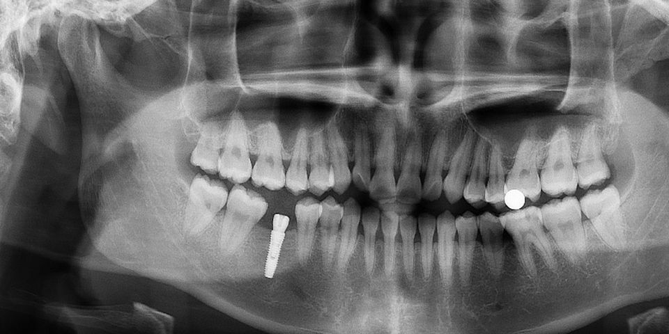
1 / 24Answer first — the responses appear here.
Your score is over 24 images, theirs over 200, and you are free to take as long as you like. It is a demonstration, not a measurement.
Mean accuracy of six dentists over 200 images, with unsure responses weighted as half a correct and half an incorrect decision.
Pairwise agreement between observers, which is fair at best. They were not converging on the same tell-tale features.
Judgements the observers refused to commit on. They are the hardest images, and how you count them is the one thing that moves the headline number.
A panoramic radiograph is a wide, thin image of the whole jaw. Generating one directly at diagnostic resolution with a diffusion model is possible and expensive. PanoDiff-SR does not.
Machine learning in dentistry is short of data. Public panoramic radiograph (PR) datasets are few, each is tied to one device and one patient population, and none of them contains many rare findings. Synthetic radiographs are a way out of that: pooled with real ones they can balance an under-represented class, and on their own they make teaching material that carries no patient inside it.
Until now that work has been almost entirely GAN-based, and three problems keep recurring. The field of view is usually cropped to the dentoalveolar region rather than the complete arch. Observer studies still catch the synthetic images at around 78–82%, which means visible artefacts survive. And adversarial training remains fragile — mode collapse and instability are reported repeatedly in medical image synthesis.
Diffusion answers the third problem directly. It does not answer the second one for free, and it makes the first one expensive: the iterative denoising loop has to run at whatever resolution you want out, and at 1024 × 512 that cost is prohibitive on one GPU. The pipeline therefore splits the two jobs. Generation happens small; resolution is added afterwards in a single pass.
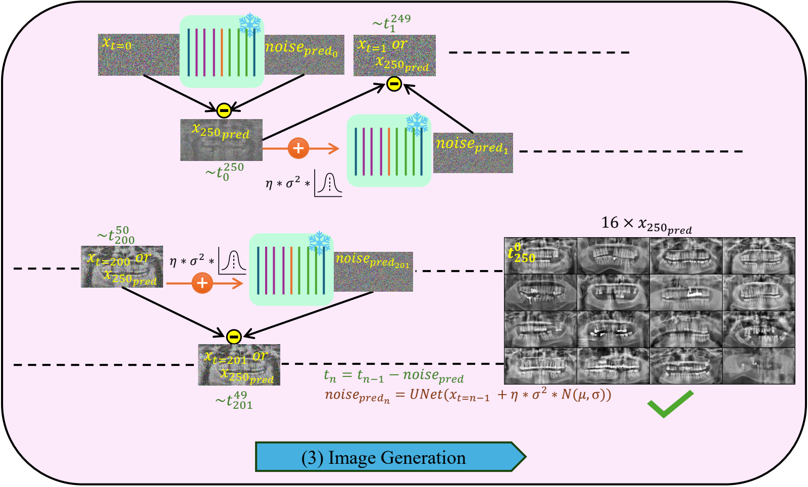
The split is only worth making if it is cheaper, so the paper measures it. Both stages were profiled back to back on the same single 47 GB GPU.
| PanoDiff (LR synthesis) | SR — HAT 4× (LR → HR) |
|---|
* wall-clock from the training logs of the runs reported in the paper. † from a dedicated profiling run measuring both stages back to back. LR: 256 × 128. HR: 1024 × 512.
Network evaluations per image. The generator runs its denoiser 250 times; the super-resolution network runs once.
End-to-end inference per radiograph, of which 6.84 s is the diffusion loop at 256 × 128 and 0.31 s is the 4× upscale.
Everything in this paper — both trainings and all 7243 generated radiographs — ran on one RTX 6000 Ada.
7243 panoramic radiographs pooled from five public sources on four continents, cropped per source and resized to a common 1024 × 512.
| Source | Images | Country | Native resolution |
|---|
Pooling five devices is not free. Each machine has its own exposure, geometry and post-processing, and a t-SNE of ResNet-50 features shows the five sources occupying distinguishable regions of feature space. The model therefore learns a mixture of device appearances, and every distribution metric in this paper is computed against that mixture.
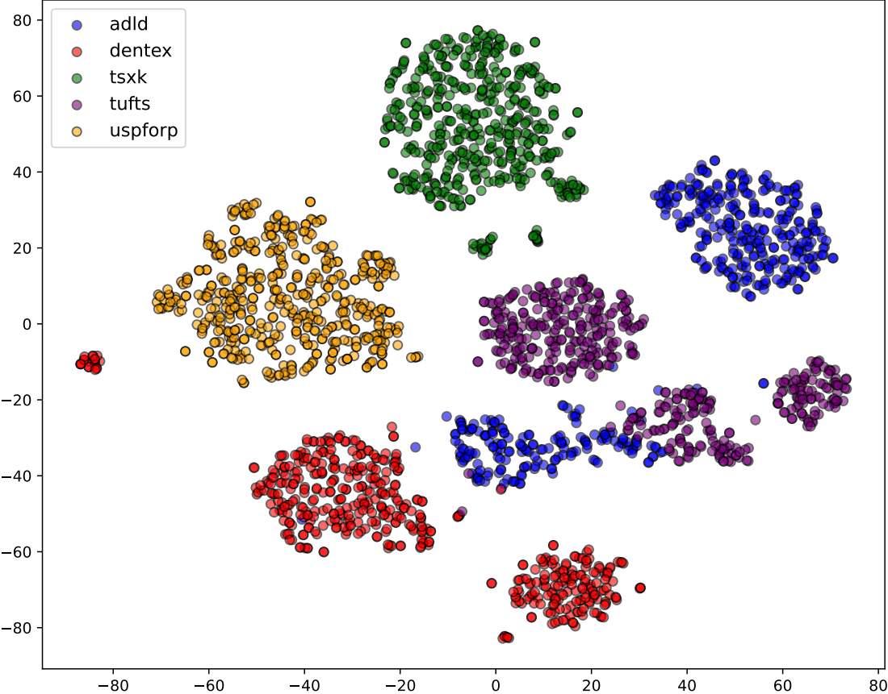
One step, applied to everything: a crop that is hard-coded per source to remove that device's letterboxing and burned-in markers, then a Lanczos resize to 1024 × 512. The crop margins are the whole trick — without them, five differently framed corpora cannot be pooled into one training set.
crop_top_left_bottom_right, per source ADLD (90, 30, 30, 170) DENTEX (20, 100, 50, 20) TUFTS (20, 30, 100, 100) USPFORP (30, 30, 165, 30) then img.crop(box).resize((1024, 512), LANCZOS)
A 34-million-parameter U-Net, trained to strip noise out of a radiograph, then run backwards 250 times from pure noise until a jaw appears.
Diffusion has two halves. The forward half needs no learning at all: take a real radiograph and add Gaussian noise to it on a fixed schedule until, after 1000 steps, nothing is left but noise. The reverse half is the model: a U-Net trained to look at a noisy image and say how much of it is noise. Run that network repeatedly, subtracting a little of its prediction each time, and you walk backwards from noise into an image.
The two schedules are drawn to their real definitions, so the switch shows a genuine difference: the cosine schedule destroys the image later and more gently. That choice turns out to matter, and not in the direction the paper originally assumed — see the ablation below.
U-Net with hidden dims [64, 128, 256, 512] and self-attention, 34.0 M trainable parameters.
Only two spatial halvings, by pixel-unshuffle rather than strided convolution, so the coarsest feature map is 32 × 64 and the reduction moves information into channels instead of discarding it.
L1 objective, 1000 training timesteps, cosine β-schedule, EMA weights, 110 epochs, seed 42.
DDIM with 250 inference steps — far fewer than ancestral DDPM sampling would need for the same quality.
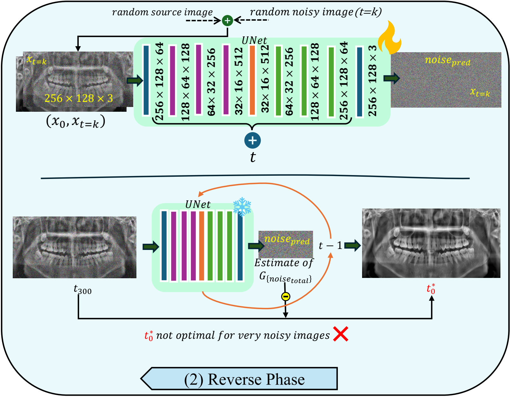
Because the sampling seed is fixed, the same noise vector can be decoded by each checkpoint in turn, so what changes between columns is the generator alone. The striking thing is how early the coarse structure arrives: by epoch 11 the model already draws a recognisable full arch. What the later epochs add is consistency and detail — firmer crown outlines, roots that separate from the trabecular background, and even contrast across the image.
Four things were varied, three of them read straight off the trained checkpoint and one of them — the noise schedule — requiring two models trained from scratch under a matched 30-epoch budget. FID here is computed on 1000 generated against 1000 real low-resolution radiographs, so these numbers are comparable with each other but not with the full-corpus tables further down.
Two findings the authors report against themselves.
The sampler budget is the cheap lever: 100 steps costs 5 FID points and runs 2.5× faster, 50 steps stays within 15 points at 4.9× faster, and only at 25 steps does quality fall away.
The comparison that matters for stage one is at 256 × 128, before super-resolution confuses things. FastGAN was trained on the same corpus.
FID is against the same 7243 real low-resolution radiographs; real data itself scores IS 2.91. The confound is stated in the paper and worth repeating here: the two models do not match in capacity, training budget or pre-training, so this figure shows what each configuration produced, not which family is better. The controlled version of that question is in §8.
A hybrid attention transformer, pre-trained on natural images and fine-tuned for 400,000 iterations on radiograph pairs, takes the 256 × 128 seed to 1024 × 512 in a single forward pass.
The seed the diffusion model produces is a complete panoramic radiograph in composition but useless in detail: at 256 × 128 a molar is a smudge a dozen pixels across. HAT (hybrid attention transformer) combines channel attention with overlapping window self-attention, so it can use both local texture and long-range context; here it starts from released natural-image weights and is fine-tuned on PR pairs with pixel, perceptual and adversarial terms.
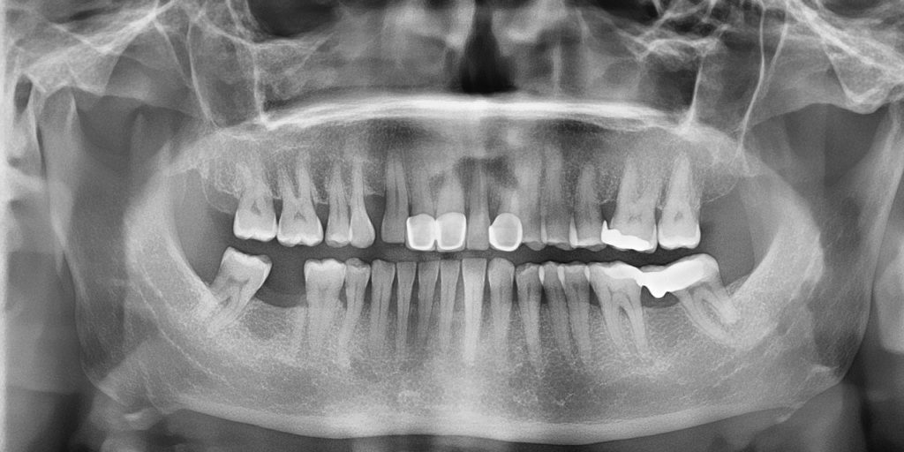
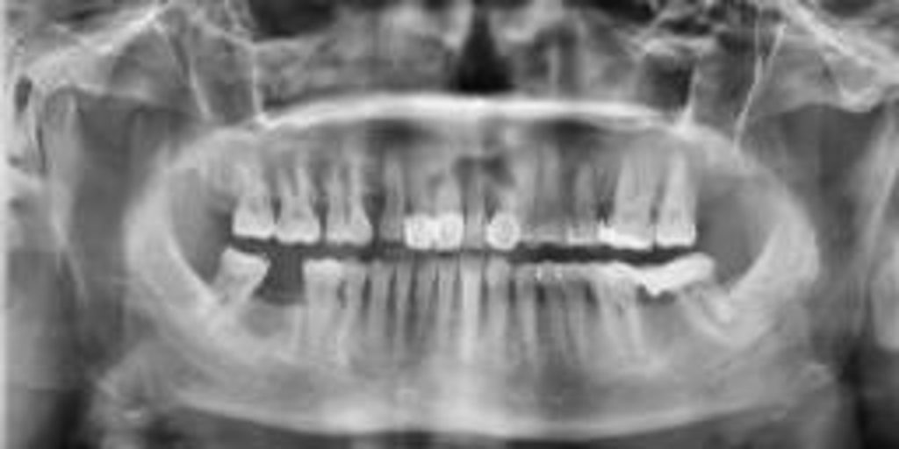
Both halves are the same generated radiograph. The left is what stage one emitted; the right is what stage two made of it.
Enamel edges, the periodontal ligament space, trabecular texture in the ramus and the outlines of restorations. What it cannot add is anything the seed did not imply — the anatomy is decided at 256 × 128.
Measured honestly, on 300 real radiographs downsampled 4× and restored, the answer depends entirely on which metric you believe — and this is the clearest case on the page of a metric disagreeing with the eye.
Bicubic upsampling wins on PSNR and SSIM and is visibly the worst image on the page. PSNR and SSIM reward a smooth, conservative prediction, and blur is exactly that. LPIPS, which compares deep features rather than pixels, ranks the same rows in the opposite order — and it is LPIPS that agrees with what the crops below look like. Fine-tuning takes LPIPS from 0.274 to 0.116; the last of that comes from weight averaging.
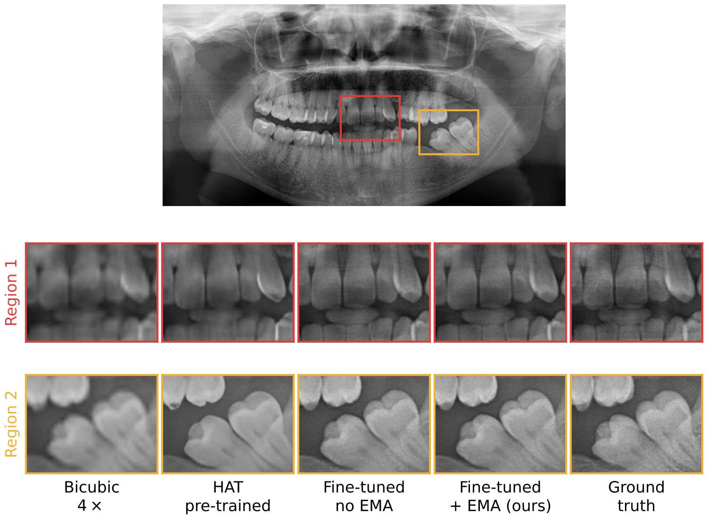
The first version of this comparison was not fair, and the revision says so. SwinIR and HAT were compared without equalising pre-training or fine-tuning budget. Under matched conditions the picture changes: before any fine-tuning the two architectures are perceptually equivalent (LPIPS 0.274 against 0.269), and what separates them afterwards is the objective, not the architecture — HAT was fine-tuned with perceptual and adversarial terms, the recovered SwinIR with a pixel loss alone.
| Variant | PSNR ↑ | SSIM ↑ | LPIPS ↓ |
|---|
SwinIR fine-tuned on a pixel loss posts the best PSNR and SSIM on the page and the worst LPIPS — the same trap as bicubic, one row further along. Fine-tuning SwinIR with HAT's exact recipe is the experiment that would settle the architecture question, and it has not been run.
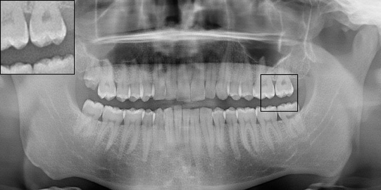
Four sets of 7243 images — real and synthetic, at low and high resolution — and every pairwise comparison the paper could make between them.
The headline is FID 40.7 between 7243 real and 7243 synthetic high-resolution radiographs. On its own that number means very little, which is why the table below includes the comparisons that give it a scale: what two halves of the same set score against each other (the floor), and what two different real devices score against each other (the ceiling of what "different but both real" looks like).
Read the rose bar at 40.7 against the green band at 36.8–70.1. The distance from real to synthetic at high resolution sits inside the range that separates two real datasets acquired on different machines. Read it also against the grey floor at 5–6, which is what the same distribution scores against itself: 40.7 is not small in absolute terms.
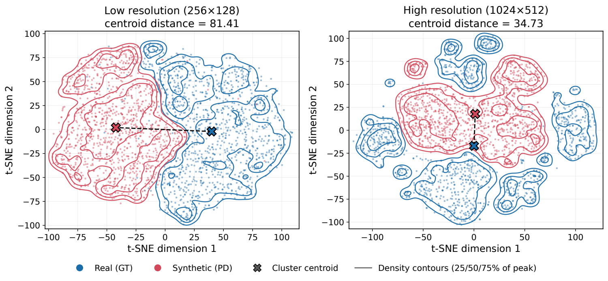
What these two metrics can and cannot say. FID compares the mean and covariance of Inception features between two sets; it is sensitive to sample size, so numbers are only comparable within a table. Inception score never looks at the real data at all — it rewards an ImageNet classifier being confident and varied, which is why a model can improve on IS while drifting away from the distribution it is supposed to be modelling. That happens on this page, in the diffusion ablation. Neither metric was designed for radiographs, and neither knows what a mandible is. That is what the next two sections are for.
Three early-career dentists with under ten years of practice and three with over fifteen, spanning prosthodontics, oral surgery, orthodontics and oral radiology. Each sat one session of about an hour, alone.
Each radiograph was displayed for twelve seconds, including about two seconds of loading. For each one the observer moved a slider to one of five positions: definitely real, probably real, unsure, probably fake, definitely fake. The graded scale is deliberate — forcing a binary choice would have thrown away the information that matters most, which is how often an expert simply could not tell.
Bars read left to right: definitely real, probably real, unsure, probably fake, definitely fake. The counts here are computed from the study's raw submission log and reproduce the paper's Table 5 exactly.
A five-level scale needs a rule for what an unsure response is worth, and it is fair to ask whether that rule is carrying the headline result. The paper reports all four candidate rules.
Three of the four agree to within 3.4 points, so the reported accuracy is a property of the responses rather than of the weighting. The fourth — discarding unsure responses — lifts the mean to 78.5% and lands it exactly on the 78.2% GAN benchmark the paper's central claim rests on being below. It does that not because the radiographs became easier to detect but because the 157 hardest judgements were removed from the denominator.
Values run from 0.18 to 0.43, which is fair at best on the Landis–Koch scale, and there is no meaningful difference between the early-career and experienced groups. In a real-versus-synthetic task this is the favourable direction: high agreement would mean the observers were all spotting the same artefact. Low agreement, together with 68.5% accuracy, says a sizeable fraction of the synthetic radiographs carried no consistent tell at all. The highest pair, EC3 and EP3 at 0.43, is also the pair whose response distributions look most alike.
Examples were chosen for each category by the majority of the observers' assessments, not by eye. Click either image to enlarge.
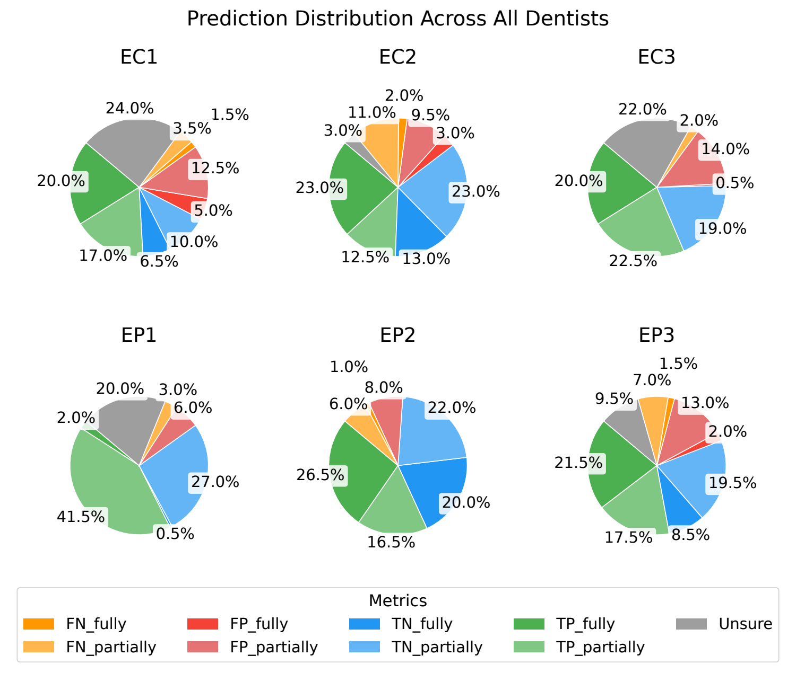
A vision transformer trained to separate real from synthetic reaches 97.7% test accuracy. The humans reached 68.5%. Where the classifier looks is a more delicate question than the paper first claimed.
A ViT was trained on 7243 real and 7243 synthetic high-resolution radiographs with an 80:20 split. It separates them almost perfectly, which is worth stating plainly: these images are not indistinguishable, they are hard for a person under time pressure. Attention rollout then shows which patches drove each decision.
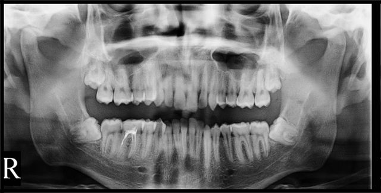
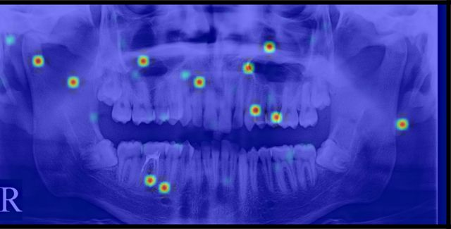
Top three rows of the grid are real radiographs, bottom three synthetic. A dot marks the four the classifier got wrong; all four are synthetic radiographs it read as real. C is the classifier's output, 1 for real and 0 for synthetic.
A claim withdrawn in revision. The submitted version of this paper said attention on synthetic images was misdirected and did not concentrate on the same anatomical cues. Measured over the full held-out set, that does not hold — synthetic maps put marginally more mass on teeth and jaw than real ones do. The sentence was withdrawn and replaced by the measurement below, which also found something the authors were not looking for: this classifier does not preferentially attend to dental anatomy in either class.
The dashed marker on each row is the uniform reference: the value the quantity would take if attention carried no spatial preference at all. Both classes fall below it on teeth and on jaw, which means the network is attending away from the dentition, not towards it. With 1449 images per group every difference here is significant; the effect sizes are the quantity to read, and only entropy (+0.607) is large.
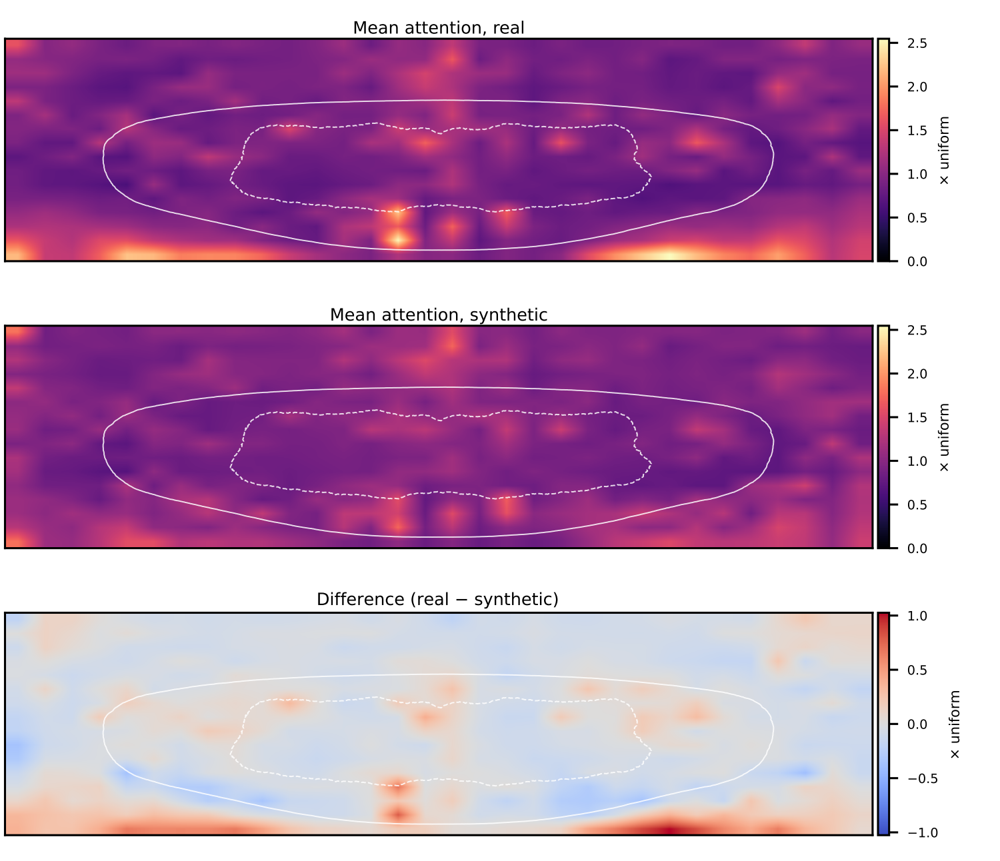
Four models trained from scratch at full resolution on the same 7243 radiographs under a matched budget, to test the premise the whole pipeline rests on. The answer is not a clean win.
If splitting generation from upscaling is the contribution, then generating directly at 1024 × 512 is the control that has to be run. It was: StyleGAN2-ADA, FastGAN-HR, ADM, LDM and PanoDiff-HR — the same model as PanoDiff but trained at full resolution — all on the same data, all at 110 epochs.
| Model | Family | FID ↓ | IS ↑ | ViT detect % ↓ | Cost (acc.-h) |
|---|
Three things this table settles, one of them against the paper.
FID and IS have no idea what a mandible is, so four global anatomical measures were computed over 1500 images per model: bilateral symmetry, the periodicity of the tooth row, the number of distinct enamel crowns, and occlusal separation.
* differs from real at p < 0.05, ** at p < 10−4 (Mann–Whitney U). The last row is the fraction of images falling outside the central 98% of real radiographs on any of the four measures, so the real column's 7.3% is the floor that statistic can reach. LDM's 53.9% and its 26.1 enamel crowns are the signature of the repeated tooth rows visible in the figure below. These measures reject degenerate output reliably; they are global, and they say nothing about crown-to-root proportion or root morphology.
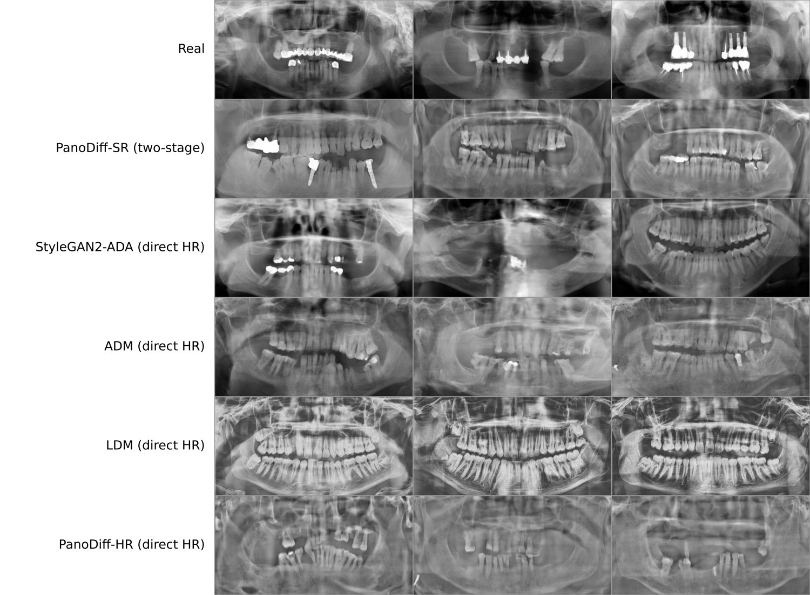
The corpus pools five machines, so a fair worry is that the model has simply learned the largest source. Each device was therefore compared with the synthetic set and with the pooled real corpus at a matched n = 500, redrawn five times.
The two bars move together: a device's distance to the synthetic set is predicted by its own distance to the pooled corpus, so the model is not closer to one machine than another relative to how far the machines sit from each other. For scale, the ten device-to-device comparisons range from 66.6 to 123.4, and two disjoint draws from the pooled real set give 56.3 ± 1.7 at n = 250. What this does not resolve is how much of the absolute level, as opposed to the ordering, is device appearance rather than anatomy.
The limitations the authors put in writing, rather than the ones a reader has to infer.
Neither anatomy nor pathology can be specified. That is a real limit on the use case that motivates synthetic data in the first place — augmenting rare findings — and it is the obvious next piece of work.
U-Net width and depth, the SR loss weights, the number of training timesteps and the composition of the pooled corpus were adopted from the source implementations and never varied.
Linear versus cosine was run at 30 epochs, not the 110 of the reported model. A longer budget could narrow or widen the gap.
No repeated readings, so within-reader variability is unknown. With three readers per group the early-career versus experienced test cannot reach p < 0.10 by construction, and the observed gap does not reach significance.
Matched pre-training and budget removed two confounds, but HAT was fine-tuned with perceptual and adversarial terms and the recovered SwinIR with a pixel loss. The objective, not the architecture, is what produced the difference.
The nearest-neighbour test rules out whole-image copying. It would not detect a distinctive local structure being reproduced, which matters because the source data, though public, comes from patients.
Both stages, the observer-study application the dentists actually used, and the checkpoints behind every figure on this page.
Six epochs of PanoDiff — 11, 33, 55, 77, 99 and 110 — the six columns of the training
progression above.
archive.org/download/panodiff/trained_models
Real_HAT_GAN_SRx4_finetuned, the 400k-iteration EMA model used for every high-resolution
image on this page.
archive.org/download/panodiff/experiments
All five are public or available on request. Links and terms are in §3; none of them is redistributed here.
@misc{jain2025panodiffsr,
title = {PanoDiff-SR: Synthesizing Dental Panoramic Radiographs using Diffusion and Super-resolution},
author = {Jain, Sanyam and Neves de Freitas, Bruna and Basse-O'Connor, Andreas
and Iosifidis, Alexandros and Pauwels, Ruben},
year = {2025},
eprint = {2507.09227},
archivePrefix = {arXiv},
primaryClass = {eess.IV},
url = {https://arxiv.org/abs/2507.09227}
}